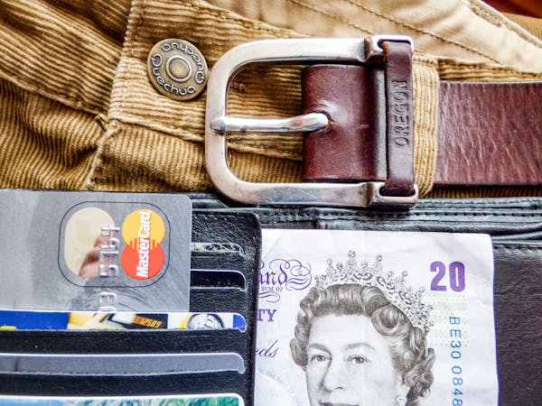

Travel Rewards Credit Cards: How to Fly for Free in 2024
Published: May 2025 "Travel hacking isn't about gaming the system—it's about working smarter so you can explore more and pay less." — Nomadic Matt
Dreaming of free flights, luxury hotel stays, and airport lounge access? The right travel credit card can turn your everyday spending into unforgettable adventures. This guide reveals what travel cards offer, how to maximize them, and why they’re the ultimate tool for savvy travelers.
What Are Travel Rewards Credit Cards?
Specialized cards that earn points/miles redeemable for flights, hotels, and more. Unlike cash-back cards, they offer premium travel perks.
3 Main Types of Travel Cards
| Card Type | Best For | Top Picks |
|---|---|---|
| Airline Cards | Loyal flyers (Delta, United, etc.) | Delta SkyMiles® Gold |
| Hotel Cards | Frequent hotel guests | World of Hyatt Credit Card |
| General Travel Cards | Flexible travelers | Chase Sapphire Preferred® |
"Points are a currency—collect the right kind, and the world gets cheaper."
Why Travel Cards Beat Cash Back (For Travelers)
1. Higher Redemption Value
- 1 Chase Ultimate Rewards point = 1.25–2¢ when transferred to partners
- 1 Amex Membership Rewards point = Up to 2¢ for business class flights
2. Elite Travel Perks
- ✔ Free checked bags
- ✔ Priority boarding
- ✔ Airport lounge access
- ✔ Travel insurance
3. Sign-Up Bonuses = Free Trips
Example: Chase Sapphire Preferred® offers 60,000 points ($750 in travel) after spending $4,000 in 3 months.
"A good welcome bonus is like finding a $500 bill in your jeans."
How to Choose the Best Travel Card
Step 1: Pick Your Loyalty Strategy
- Airline/Hotel Loyalist? Get a co-branded card (e.g., Hilton Honors Card)
- Free Spirit? Choose flexible points (Chase, Amex, Capital One)
Step 2: Match the Card to Your Spending
| Spending Habit | Best Card Category |
|---|---|
| Dining/Travel | Chase Sapphire Reserve® (3x points) |
| Groceries/Gas | Amex Gold® (4x on groceries) |
| Everything | Capital One Venture X (2x on all purchases) |
Step 3: Calculate the Annual Fee’s ROI
- $95 fee = Worth it if you get $200+ in value
- $550 fee (e.g., Amex Platinum) = Justified with lounge access + credits
"A travel card should pay for itself—or it’s not the right one for you."
5 Pro Hacks to Maximize Travel Cards
1. Stack Bonuses
- Use shopping portals (Rakuten = extra Amex points)
- Combine with airline/hotel promotions
2. Transfer Points Strategically
- Chase → Hyatt = Often 2¢+/point value
- Amex → ANA = Cheap business class to Japan
3. Time Your Applications
- Apply when you have big purchases coming (meet sign-up bonuses)
- Space applications by 3–6 months (avoid rejection)
4. Leverage Perks
- $200 annual travel credits
- Global Entry/TSA PreCheck reimbursement
- Free hotel elite status
5. Avoid These Mistakes
- 🚫 Carrying a balance (Interest kills rewards)
- 🚫 Missing annual fee deadlines
- 🚫 Hoarding points (Devaluations happen!)
"Points are like bananas—they’re best used before they go bad."
Best Starter Travel Cards (2024)
| Card | Annual Fee | Best For |
|---|---|---|
| Chase Sapphire Preferred® | $95 | Beginners (Flexible points) |
| Capital One Venture Rewards | $95 | Simple flat-rate earnings |
| Amex Green® | $150 | Dining/travel spenders |
Advanced Cards Worth the Fee
- ✔ Chase Sapphire Reserve® ($550) – 3x on travel/dining
- ✔ Amex Platinum® ($695) – Lounge access + luxury perks
- ✔ Capital One Venture X ($395) – 10x on hotels + annual travel credit
"Premium cards are like first-class seats—expensive, but priceless if you use the benefits."
Final Thought: Travel More, Pay Less
The right card can turn your daily coffee runs into beachfront getaways. Start small, learn the game, and soon you’ll be flying business class for economy prices.
"Adventure is worthwhile—especially when someone else is paying for it."
What’s your dream points redemption? Share below!
Want our free Travel Hacking Toolkit? [Download here]!